Troubleshooting with Service Software
This topic describes commands, data, and options available in Panther's Service Software.
-
When using Service Software Tool, Universal fluid usage is not tracked.
-
Recommendations:
Use a different set of Universal Fluids when priming and/or dispensing during Service Software Tool usage. Load original Universal Fluids when returning Panther Instrument to customer.
or
Use customer’s current loaded Universal Fluids when priming and/or dispensing during Service Software Tool usage BUT load a new set of Universal Fluids when returning Panther instrument to customer.
-
Service software – firmware version and sensors should be able to be read without initializing the module.
Service Software FSE Shield Login
After the PC has booted up, the PANTHER Main Shield appears. Touch the screen, or press any key to stop the instrument from starting operators’ mode.
-
Press Shift + F10.
The FSE Password Login dialog box appears.
-
Enter the following password:
!G9x53rvic3y
Where x = the last digit of the day, and y = the last digit of the month.
-
Click OK.
The PANTHER FSE Shield appears.
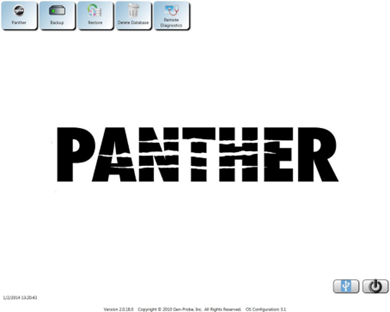
Panther Shield
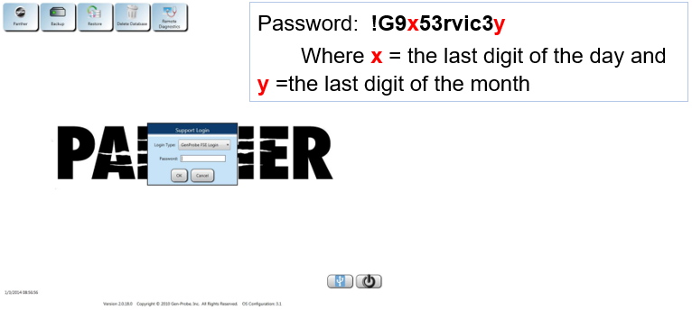
FSE Shield – Service Software Login
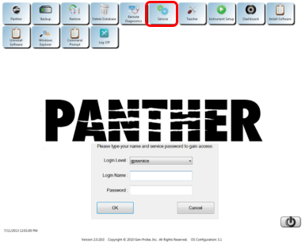
Panther Service Software – FSE Shield
Login Level: Defaults to gpservice. If instructed, select super.
Login Name: Enter your name. Entry is used to populate any reports created during the current session.
Password: Must match login level.
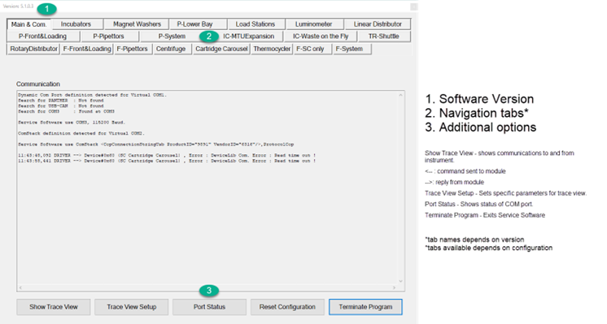
Service Software GUI
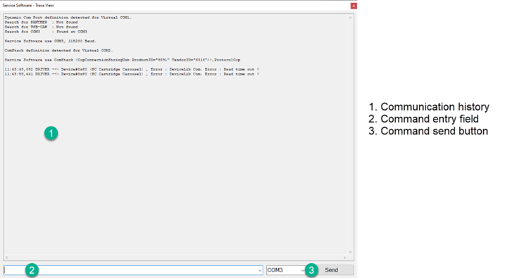
Trace View
Panther Service Software
Each tab has a Main and a Parameter subtab. Some tabs also have Move, Sub-Module, Teach, and Error Memory subtabs:
Main – Main control for that module:
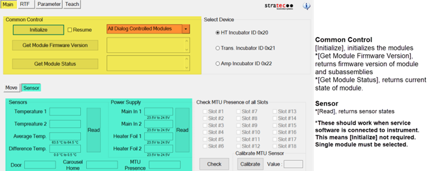
Move – Opens control screen for that module movements.
Sub Module – Additional control screen for modules with multiple sub modules.
Parameter – Will display individual module firmware version.
Teach – Allows manual teaching of mid-bay modules.
Error Memory – Not used unless specified in technical bulletins.
1. Distributor – Main Tab – Initialize
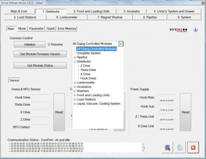
Each Main screen has a Common Control located in this area. There are three icons:
Initialize – All modules that interact with the selected module tab, Complete System – All modules, Individual Modules – Entire module or sub-module.
Get Module Firmware – will display individual module firmware version.
Get Module Status – will display individual module status.
NOTE: If there are multiple modules, a select Device section will be to the right of the Common Control.
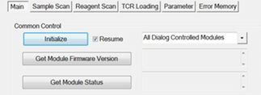
1. Distributor – Main Tab – Sensor
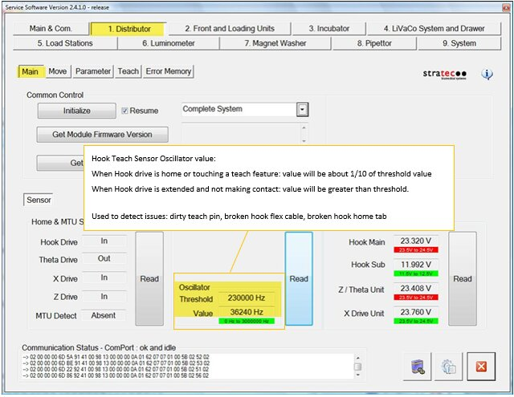
Home & MTU Sensor
Read – Displays status of all listed parameters.
Teach Sensor
Read – Displays status of all listed parameters.
Power Supply
Read – Displays status of all listed parameters.
Linear Distributor – Move Tab
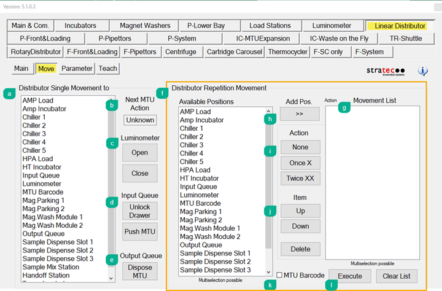
-
Distributor Single Movement to – Single click will move the Linear Distributor to that location. Double clicking will make the Linear Distributor load or unload an MTU.
-
Next MTU Action – Displays LD MTU presence state to determine what the distributor will do with the single movement command (Pick/ Place). Pick: indicates empty LD. Place: indicates MTU present. Unknown: LD is not initialized. Next MTU action changes depending on current state. If MTU is present in LD, it will place. If no MTU is in LD, it will pick.
-
Luminometer – [Open] [Close] Opens or Closes the Luminometer door.
-
Input Queue – [Unlock Drawer] Unlocks MTU drawer. [Push MTU] Advances MTU pusher.
-
Output Queue – Dispose MTU - Aspirate and dispose of all MTUs in the Output Queue. (vacuum pump needs to be turned on for the aspiration to work).
-
Distributor Repetition Movement - Available Positions – All the positions the distributor can move to.
-
Movement List – Lists positions in the order that the distributor will move to. Action indicates – shows if position will be performed once or twice (this column will be blank, x or xx).
-
Add Pos. – [>>] moves highlighted selection from available positions to the movement list.
-
Action
[None] Will perform only x/z/theta action. No hook movement, e.g., no picking or placing.
[Once X] – Will perform the Next MTU Action once per cycle.Twice XX – Will perform the Next MTU Action twice.
[Twice XX] – Will perform two Next MTU Actions. For example, if action is set to “XX” and there MTU is present in LD, next MTU Action indicating ‘place’ upon execute, the LD will place MTU in position, then pick MTU back in LD.
-
Item – [Up][Down] Moves the Delete – Removes selected position from the list.highlighted position in movement list up or down [Delete] removes selected position from the list.
-
MTU Barcode – Checkbox enables scanning MTU barcode.
-
Execute – Starts the cycle and will move the distributor to all of the selected positions in the movement list repetitively until stopped or cancelled. Clear List clears all positions from the Movement List.
Create Distributor Repetition Movement Script
A common issue is LD hook step loss error at sample mix, setup repetitive move between sample dispense slot and sample mix station
Distributor – Move Tab Repetitive movements, example.
Adding positions to movement list.
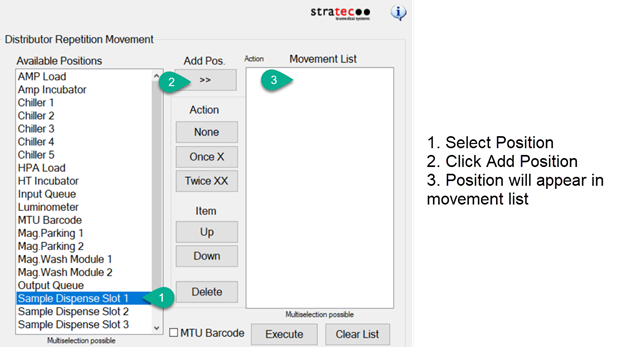
Adding Actions
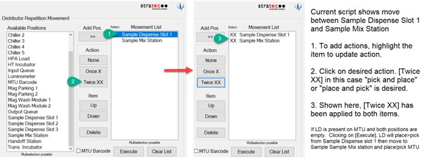
Delete one position, highlight item from Movement list and click Delete.
Add more positions.
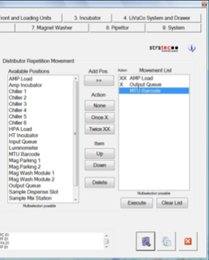
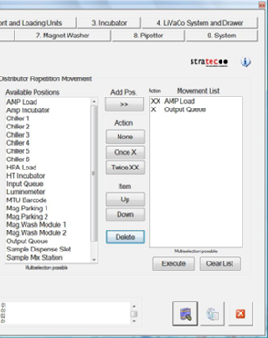
Delete one position.
Clear List
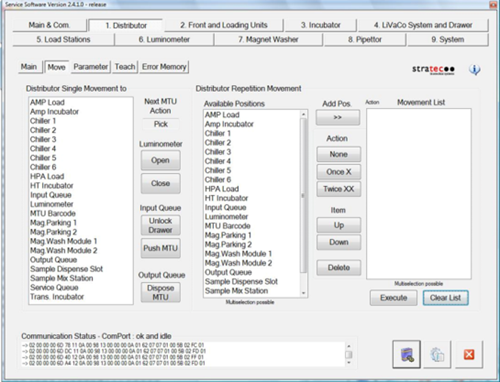
Parameter Tab – General
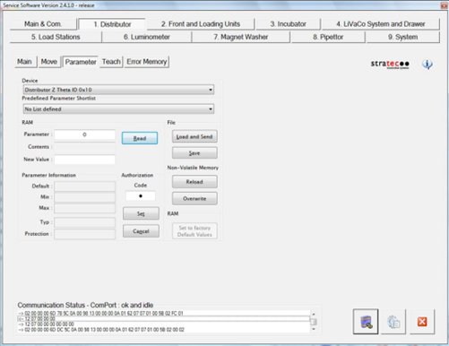
NOTES:
The parameter tab is only used to set the authorization code for teaching.
The parameter tab will be similar for each module.
Device – Selects device you want to teach.
Authorization Code – code that allows you to save teach parameters.
Set – sets the code to allow you to save teach parameters (will always be 1)
Cancel – Cancels
Save – Saves a copy of the parameters for the selected device.
Save – Saves a copy of the parameters for the selected device.
1. Distributor – Teach Tab (1)
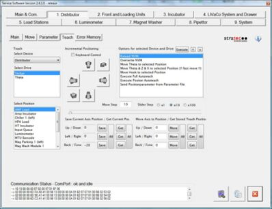
Teach
Select device – Will always be distributor.
Select Drive – Either sledge or Theta (theta is only taught at the Input Queue)
Select Position – The position that you are teaching the distributor to
Incremental Positioning
Keyboard control – lets you use keyboard to control movements.
Move step – number of steps distributor will move in that direction.
Slider Step – controls the scale of the slider bar which controls the move step size.
Options for selected Device and Drive
Execute – Performs selected option.
▲/▼- allows selection of option
1. Distributor – Teach Tab (2)
Incremental Positioning
Save Current Axis Position – Saves the positions shown in the blocks.
NOTE: Save all will save all positions in the blocks, ensure the hook is in the extended position
Get Current Pos. – Lists the current positions in the blocks.
Move Axis to Position – Moves distributor to the positions shown in the blocks (move all is not active)
NOTE: This is usually performed after a get stored positions
Get stored teach positions – Retrieves the positions of the highlighted module selected.
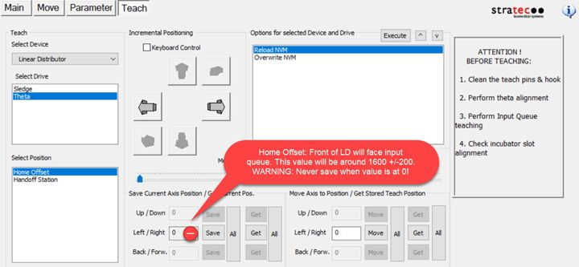
Adapt StartPositions:
Hyperlink to:
-
Unable to Teach Linear Distributor to Chiller Ramp
-
Hub > Diagnostic Podcasts (service) > Diagnostic Podcasts – The Quick Question > Adapt Start
2. Front and Loading Units – Main Tab – Initialize
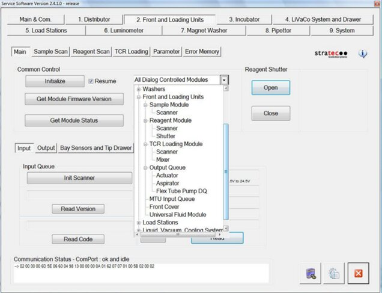
Reagent Shutter
Open/Close – Opens and closes the reagent bay cover.
2. Front and Loading Units – Main Tab – Input
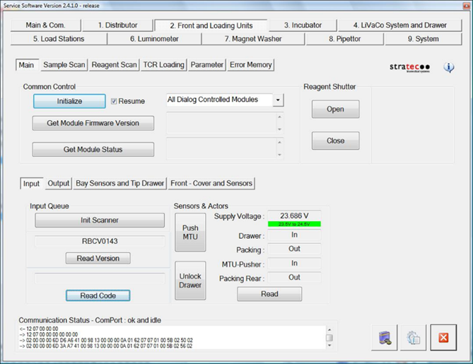
Input Queue
Init Scanner – Initializes the MTU Barcode Scanner.
Read Version – Reads barcode symbol.
Read Code – Reads the MTU label.
Sensors & Actors
Push MTU – Moves pusher forward and secures MTU stack.
Unlock Drawer – unlocks MTU drawer.
Read – Displays status of all listed Sensors & Actors.
2. Front and Loading Units – Main Tab – Output
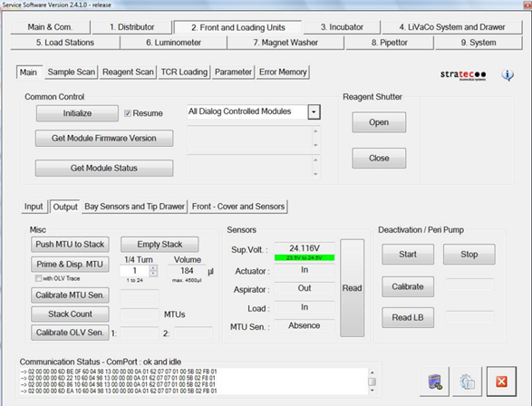
Miscellaneous
Push MTU to Stack – Moves MTU to the stack (close to the Actuator Home Position)
Prime & Disp. MTU – Primes and moves MTU to stack (You can select to display OLV trace)
Volume dispensed can be adjusted by the ¼ turn section.
Empty Stack – Clears all MTU’s from OQ, aspirating each one.
Calibrate MTU Sen. – Calibrates MTU present sensor (Note- MTU presence sensor is not used in SW versions 5.0 and later.)
Stack Count – Displays how many MTU’s are in the OQ stack.
Calibrate OLV Sen. – Calibrates OQ process control OLV sensor.
Sensors
Read – Displays status of all listed sensors.
Deactivation/Peri Pump
Start/Stop – Starts or stops the pump. (note- this will turn on even if there is no MTU present. Make sure there is a vessel to catch the fluid).
Calibrate – Calibrates the home sensor on the pump shaft.
Read LB – (Light Barrier) displays status of home pin with relation to home sensor.
2. Front and Loading Units – Main Tab – Bay Sensors and Tip Drawer
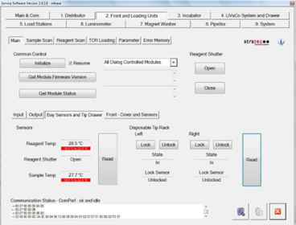
Read – Displays status of all listed temperatures and the shutter.
NOTE: Reagent Shutter will always display open.
Disposable Tip Rack
Left/Right
Lock/Unlock – locks/ unlocks selected tip drawer.
Read – Displays status of all the tip drawer (open/closed and locked/unlocked).
2. Front and Loading Units – Main Tab – Front - Cover and Sensors
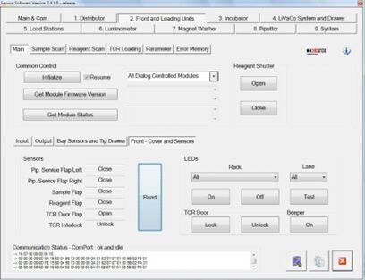
Sensors
Read – displays status of all front cover sensors.
LEDs
Rack – Select Rack to test LEDs.
Lane – Select Lane to test LEDs.
On/Off – Turns LEDs on or off for racks/lanes selected.
Test – Tests all LEDs.
TCR Door
Lock/Unlock – Locks and unlocks TCR door.
Beeper
On – turns beeper on for 5 seconds.
2. Front and Loading Units – Sample Scan Tab
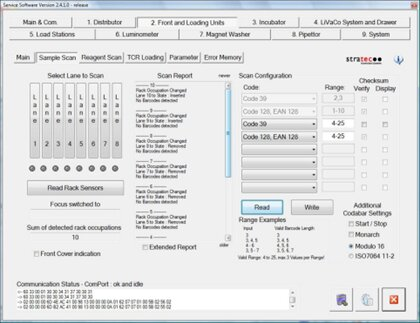
Select Lane to Scan – Select Lane, wait for Barcode Reader to activate and insert rack to scan.
Read Rack Sensors – The screen will display which lanes have racks inserted.
Scan Report – Shows rack insertions/removals and barcodes scanned.
Scan Configuration
Read – shows the current configuration of the barcode scanner.
Write – allows writing of different configurations to the barcode scanner.
2. Front and Loading Units – Sample Scan Tab; Scan Configuration Dropdown
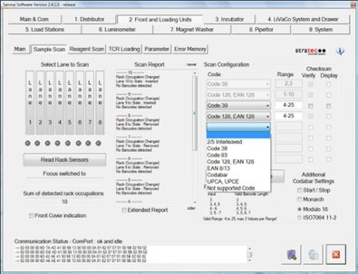
2. Front and Loading Units – Reagent Scan Tab
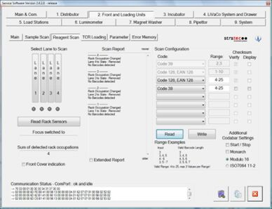
Select Lane to Scan – Select Lane, wait for Barcode Reader to activate and insert rack to scan.
Read Rack Sensors - The screen will display which lanes have racks inserted.
Scan Report – Shows rack insertions/removals and barcodes scanned.
Scan Configuration
Read - shows the current configuration of the barcode scanner.
Write - allows writing of different configurations to the barcode scanner.
2. Front and Loading Units – Reagent Scan Tab; Scan Configuration Dropdown
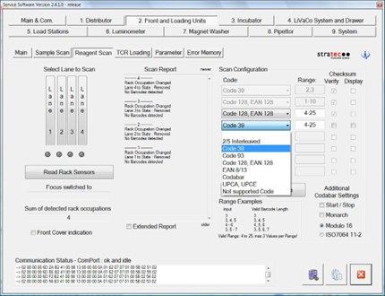
2. Front and Loading Units – TCR Loading Tab
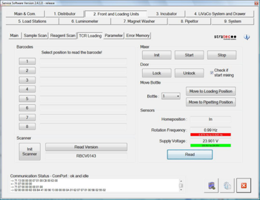
Barcodes
1 - 8 – Reads barcode on bottle of that selected position.
Scanner
Init Scanner – Initializes TCR barcode scanner.
Read Version – Reads the version of the TCR barcode scanner.
Mixer
Init – Initializes mixer.
Start – Starts mixer.
Stop – Stops mixer.
Door
Lock/Unlock – Locks and unlocks the TCR door.
Move Bottle
Bottle – Select bottle to move.
Move to Loading Position – Moves selected bottle to the loading position (facing the door).
Move to Pipetting Position – Moves selected bottle to pipetting position.
Sensors
Read – displays information for all parameters listed.
NOTE: Rotation Frequency not working
3. Incubator – Main Tab – Initialize
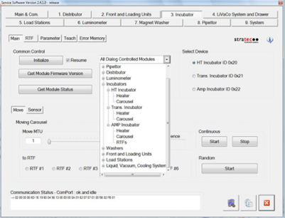
3. Incubator – Main Tab – Move
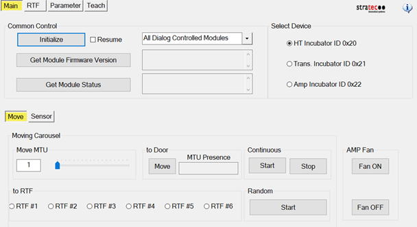
Select Device – Select which incubator you will be moving.
Moving carousel
Move MTU – Select which carousel slot to be moved to Door.
Move – Moves selected slot to MTU present sensor and then door position and displays if there is an MTU present.
Continuous
Start/Stop – Moves carousel 1 slot at a time until stopped.
Random
Start – Randomly moves carousel slots to door position.
NOTE: You must cancel this to stop.
AMP Fan
Fan ON/Fan OFF – Turns exterior fan between AMP incubator and Input Queue on/off.
NOTE:
Switches the two fans next to the service queue on the left side of the instrument on or off.
Fan connected to Amp incubator is in Incubators > Main > Move > Amp Fan.
Right side system fan above cooling unit is Lower Bay > Main > Peltiers > Additional Fan.
3. Incubator – Main Tab – Sensor
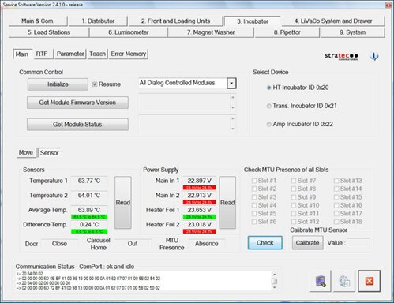
Sensors
Read – displays status of all listed parameters
Power Supply
Read – displays status of all listed parameters
Check MTU Presence of all Slots
Check – Checks for MTU presence in all slots of the carousel and reports which slots have MTUs.
Calibrate MTU Sensor
Calibrate – Calibrates the MTU presence sensor without an MTU in front of it.
3. Incubator – Teach Tab
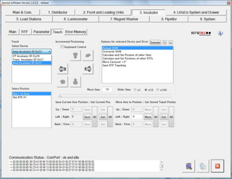
Teach
Select device – Selects which incubator to teach.
Select Position – The position that you are teaching.
Incremental Positioning
Keyboard control – lets you use keyboard to control movements.
Move step – amount of steps carousel will move in that direction.
Slider Step – controls the scale of the slider bar which controls the move step size.
Save Current Axis Position – Saves the position shown in the blocks.
Get Current Pos. – Shows the current position in the blocks.
Move Axis to Position – Moves carousel to the position shown in the blocks.
Get stored teach positions – gets position of the highlighted module from Select Position.
4. LiVaCo – Main Tab – Initialize
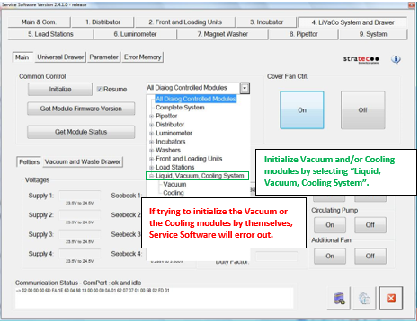
Cover Fan Ctrl
On / Off – Switches the two fans next to the service queue on the left side of the instrument on or off.
NOTE: Fan connected to Amp incubator is in Incubators > Main > Move > Amp Fan.
Right side system fan above cooling unit is Lower Bay > Main > Peltiers > Additional Fan.
4. LiVaCo – Main Tab – Peltiers
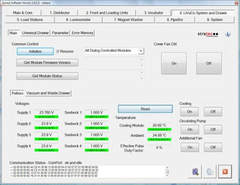
Peltiers
Voltages
Read – displays status of all listed parameters.
Cooling
On / Off – Switches the cooling module and circulating pump on or off
Circulating Pump
On / Off – Switches only the circulating pump on or off
Additional Fan
On / Off – Switches the two fans above the cooling module on the right side of the instrument on or off
NOTE:
Switches the two fans next to the service queue on the left side of the instrument on or off.
Fan connected to Amp incubator is in Incubators > Main > Move > Amp Fan.
Right side system fan above cooling unit is Lower Bay > Main > Peltiers > Additional Fan.
4. LiVaCo – Main Tab – Vacuum and Waste Drawer
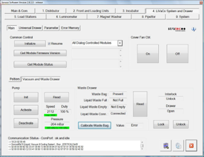
Pump
Init. – Initializes the vacuum pump.
Activate/Deactivate – Switches the vacuum pump on or off.
Read – displays status of all listed parameters.
Waste Drawer
Read – displays status of all listed parameters.
NOTE: “Liquid Waste Conn” is not active.
Calibrate Waste Bag – Calibrates the waste bag sensor. Make sure the waste bag is removed and drawer is closed before calibration.
Interlock
Displays the state of the interlock.
Drawer
Displays the state of the Waste Drawer.
Lock/Unlock – Locks or Unlocks the Waste Drawer.
4. LiVaCo – Universal Drawer
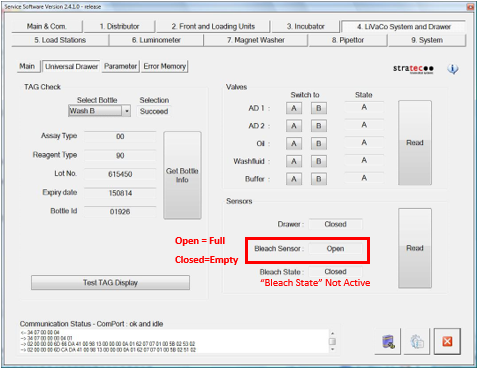
Universal Drawer
TAG Check
Select Bottle – Selects Universal Bottle RFID label to read.
Get Bottle Info – Displays the listed conditions of the bottle selected.
Test TAG Display – Initialize Universal Fluid drawer before pressing the “Test TAG Display” button. It tests the LEDs from the Universal Fluid Drawer LEDs for bottles presence (Flex Cable).
Valves
Switch to – Changes the solenoid valve between bottles A and B.
Read – Displays status of all Solenoid Valves.
Sensors
Read – Displays status of all listed parameters.
NOTE: Bleach sensor: Open = full / Closed = empty
Bleach State: Not active.
5. Load Stations – Main Tab – Initialize
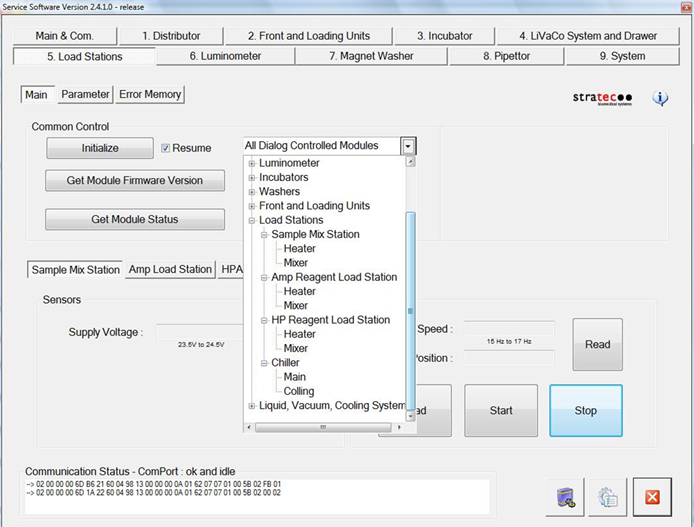
5. Load Stations – Main Tab – Sample Mix Station
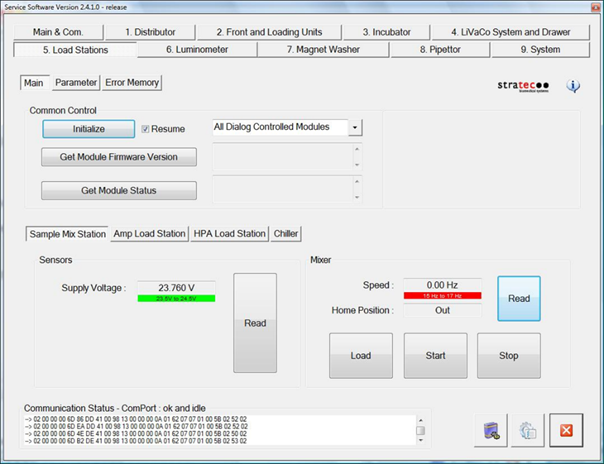
Sensors
Read – Displays status of the Supply Voltage.
Mixer
Read – Displays status of all listed parameters.
Load – Loads a MTU.
Start/Stop – Turns mixer on and off.
5. Load Stations – Main Tab – Amp Load Station
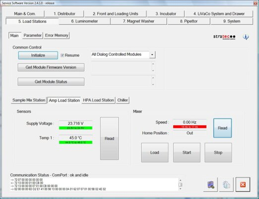
Sensors
Read – Displays status of all listed parameters.
Mixer
Read – Displays status of all listed parameters.
Load – Loads a MTU.
Start/Stop – Turns mixer on and off.
5. Load Stations – Main Tab – HPA Load Station
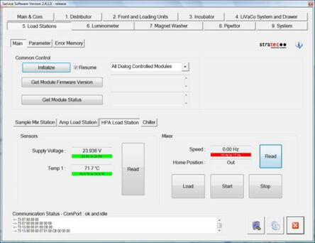
Sensors
Read – Displays status of all listed parameters.
Mixer
Read – Displays status of all listed parameters.
Load – Loads a MTU.
Start/Stop – Turns mixer on and off.
5. Load Stations – Main Tab – Chiller
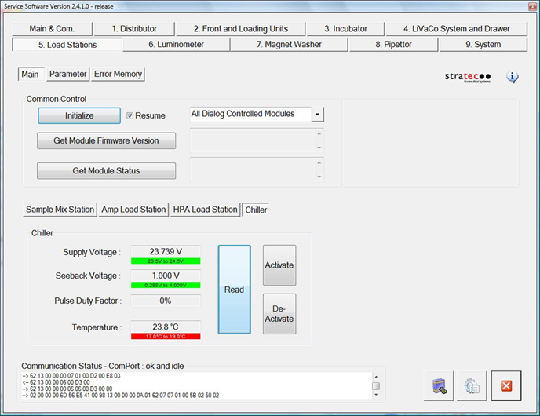
Read – Displays status of all listed parameters.
Activate/Deactivate – Activates or deactivates Chiller Ramp peltier.
6. Luminometer – Main Tab – Initialize
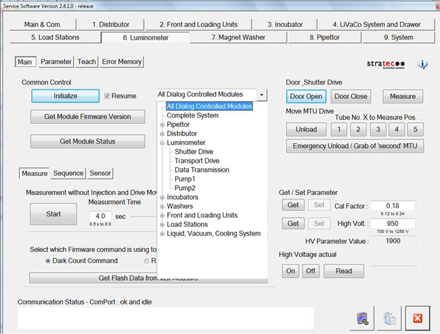
Door Shutter Drive
Door Open/Door Close – opens closes Luminometer door.
Measure – moves isolator to the measure/Up position.
Move MTU Drive
Unload – removes the MTU from the Luminometer.
1, 2, 3, 4, 5 – Move the selected tube to measure position.
Emergency Unload – Used if two MTUs are accidentally placed into the Luminometer.
6. Luminometer – Main Tab – Measure
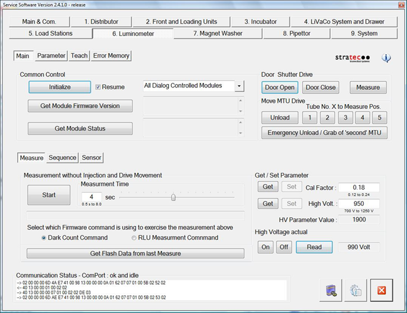
Measurement without Injection and Drive Movement
Start – Performs Dark count or RLU measurement. (Enter 2 seconds for Measurement time, this is standard read time for both reads.)
Get Flash Data from last Measure – Graphs data from above.
Get / Set Parameter
Get – Displays parameter selected.
Set – Saves parameter selected.
High Voltage Actual
On/Off – Turns on or off high voltage.
Read – Displays status of all listed parameters.
6. Luminometer – Main Tab – Sequence
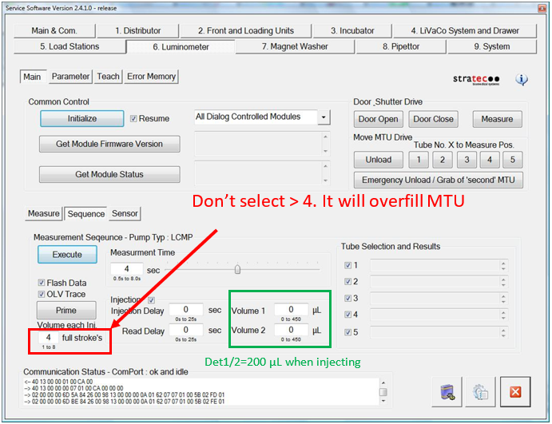
Measurement Sequence – Pump Typ: LCMP
Execute – Measures flash curves and OLV trace on each tube while dispensing amounts of AD1 and AD2 fluid volumes selected.
NOTE: Use syscheck to get actual flash curve.
Prime – Primes an MTU with the parameters selected.
NOTE: Using more than 4 full strokes will overfill the MTU.
Tube Selection and Results – Shows results of Execute command.
NOTE: You must manually insert, close lumo door and open lumo door, remove MTU.
6. Luminometer – Main Tab – Sensor
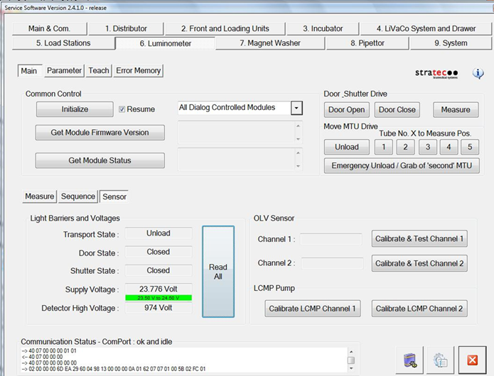
Light Barriers and Voltages
Read All – Displays status of all listed parameters.
OLV Sensor
Calibrate and Test Channels 1 & 2 – Calibrates selected OLV sensor.
NOTE: This will dispense fluid. You must manually position the MTU into position.
LCMP Pump
Calibrate LCMP Channels 1 & 2 – Calibrates the selected Detect pump.
6. Luminometer – Teach Tab
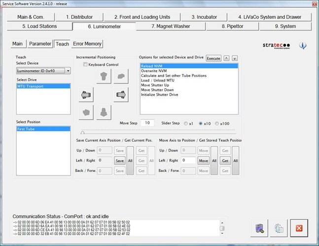
Teach
Select device – Will always be Luminometer.
Select Position – Will always be First Tube.
Incremental Positioning
Keyboard control – lets you use keyboard to control movements.
Move step – amount of steps transport will move in that direction.
Slider Step – controls the scale of the slider bar which controls the move step size.
Save Current Axis Position – Saves the positions shown in the blocks.
Get Current Pos. – Shows the current positions in the blocks.
Move Axis to Position – Moves transport to the position shown in the blocks.
Get stored teach positions – gets position of the first tube.
7. Magnetic Washer – Main Tab – Initialize
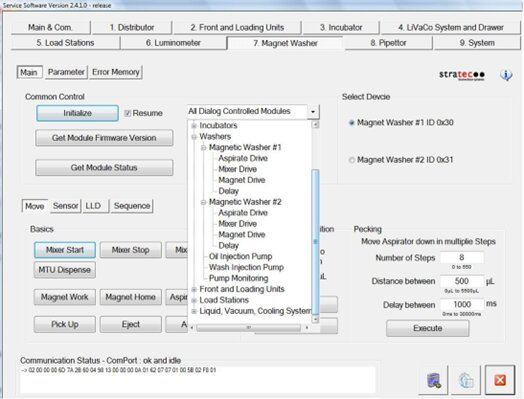
Select Device – Select magwash to be tested.
7. Magnetic Washer – Main Tab – Move
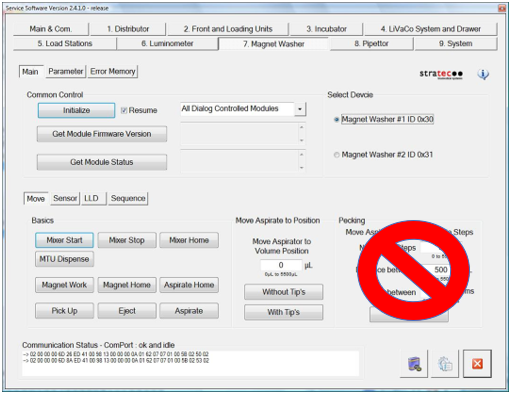
Basics
Mixer Start – Turns the mixer on.
Mixer Stop – Turns the mixer off.
Mixer Home – Moves the mixer to the home position.
MTU Dispense – Moves MTU to the Dispense position (under injectors).
Magnet Work – Moves magnet to the work position.
Magnet Home – Moves magnet to the home position.
Aspirate Home – Moves aspirators to the home position.
Pick Up – Make sure MTU is present. Automatically the MTU is moved to the tip pick position, then the aspirators descend and pick the tiplets.
Eject – Make sure MTU is NOT present. Automatically the aspirators descend to the eject tip position to strip the tiplets.
Aspirate – Moves aspirators to aspirate fluid from MTU, then they move to the home position.
Move Aspirate to Volume Position – Move aspirators to the height selected based on µL.
NOTE: Max value is 5000.
Without Tips – height will be based on aspirator tubes only.
With Tips – height will be based on aspirator tubes and tiplets picked.
7. Magnetic Washer – Main Tab – Sensor
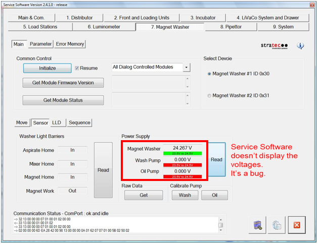
Washer Light Barriers
Read – Displays status of all listed parameters.
Power Supply
Read - Displays status of all listed parameters.
NOTE: Wash Pump and Oil Pump voltage will always read 0.00V (this is a bug).
Calibrate Pump
Wash – Calibrates the wash pump.
Oil – Calibrates the oil pump.
Raw Data
Get – retrieves pump calibration data. Creates a file under
C:Panther\ServiceSoftware\log\MagWashRawData
(Time stamp of when Wash Pump got calibrated.)
7. Magnetic Washer – Main Tab – LLD
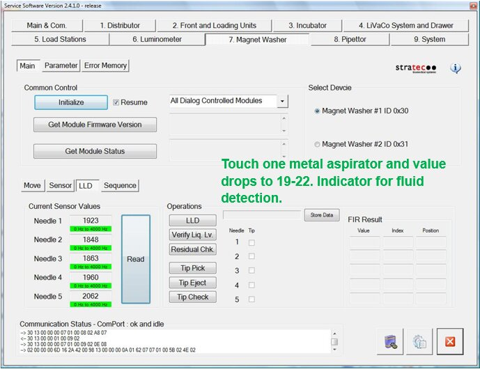
Current Sensor Values
Read – Displays status of all listed parameters.
Operations
LLD – Performs LLD and displays fluid level in MTU tubes (will stop when first aspirator senses fluid). Tells how much fluid.
Verify Liq. Lv. – Verifies LLD for pre-fluid, fluid and residual checks (need 1mL per tube to work properly and tiplets).
Residual Check – Checks √ for residual fluid. If there is any residual, it’ll display how much volume.
Tip Pick – Picks tiplets.
Tip Eject – Ejects tiplets, and checks √ if tiplets are still on.
Tip Check – Checks √ which aspirators sense a tiplet on.
7. Magnetic Washer – Main Tab – Sequence
MTU Injection
Aspirate/Dispense – Select speed, volume, and drawback.
Medium – Oil or Wash
Tube – 1, 2, 3, 4, 5
Trace – Select with or without pressure trace.
Execute – Runs sequence using all of the selections.
Note – an MTU needs to be placed in the in the MW before selecting “Execute.”
Prime
Medium – Oil or Wash.
Volume – 2000µL or 4000µL
Tube – 1, 2, 3, 4, 5
Prime – Runs the prime using all of the selections.
Note – an MTU needs to be placed in the in the MW before selecting “Prime.”
8. Pipettor – Main Tab – Initialize
XY – Random Movement – will randomly move the Pipettor(s) throughout the system, including with a z movement (if selected). Note – the blue partition wall needs to be removed for this test.
8. Pipettor – Main Tab – Sensors
Sensor Tab
Left Arm / Right Arm
Read – Displays status of all listed parameters.
8. Pipettor – Move Tab
Important: Remove blue divider before moving pipettors. Routing obstacles may not be accurate.
Left Arm/Right Arm
Group Selection – Selects the area where you want the arm to move.
Select Coordinate – When a group selection is picked all the positions the arm can move to will show up in a matrix.
NOTE: You must double click in the matrix to move to that position
Tip
Pick – Picks a tip from the selected location.
Eject – Ejects the tip.
LLD
Bar. – Performs barometric level sensing at position selected
Cap. – Performs Capacitive level sensing at position selected.
Z Move to
Travel – Moves to pipettor travel Z-height.
Start – Moves to position that the pipettor is currently at
Max – Moves to max Z-height of pipettor at current position.
Move Sequence
Creates a movement script.
Up – selected move moves up in the sequence.
Delete – Deletes selected move.
Down – selected move moves down in the sequence.
Execute – Executes move sequence.
Clear – Clears all move sequences.
NOTE: You must cancel to stop movements.
8. Pipettor – LLD Left Arm
List Control
New – Creates new script editing session.
Clear Result – Clears data from the Coord. List and Results.
Load – Loads previously loaded script.
Save – Saves current script.
Report – Generates report from current script.
Coord. List and Results – Select where you want to perform LLD from (AMP/HPA/Reagent bay) and will tell you tips needed to perform test.
Up – Selected step moves up in the sequence.
Delete – Deletes selected step.
Down – Selected step moves down in the sequence.
LLD
Execute – Performs selected LLD function.
bar – Performs barometric LLD on positions selected.
cap – Performs capacitive LLD on positions selected.
Log – Generates a log of the test and puts it in C:\Panther\Panther Service Software\Log\Session\gSLogs_YYYYMMDD.
Cycles – Select the number of cycles to perform for LLD testing.
8. Pipettor – LLD Right Arm
List Control
New – Creates new script editing session.
Clear Result – Clears data from the Coord. List and Results
Load – Loads previously loaded script.
Save – Saves current script.
Report – Generates report from current script.
Coord. List and Results – Select where you want to perform LLD (Sample Load/TCR/ Sample Tube) and will tell you tips needed to perform test.
Up – Selected step moves up in the sequence.
Delete – Deletes selected step.
Down – Selected step moves down in the sequence.
LLD
Execute – Performs selected LLD function.
bar – Performs barometric LLD on positions selected.
cap – Performs capacitive LLD on positions selected.
Log – Generates a log of the test and puts it in C:\Panther\Panther Service Software\Log\Session\gSLogs_YYYYMMDD.
Cycles – Select the number of cycles to perform for LLD testing.
9. System – Main 1 or P-System – Main
Initialize System – Initializes entire system.
Clear MTU’s – Clears MTU’s from all positions.
System OQ Test – Inserts MTU into modules selected.
NOTE: You must perform two cycles to test MW2
Pressure Integrity Test – Perform pressure integrity test on selected pipettor.
Luminometer OQ Test – Performs OQ test on Luminometer (primes AD1/2, calibrates OLV, verifies OLV).
9. System – Main 2 or P-System – Pipettor and Magwash
Mag Wash OQ Test – performs OQ test on selected MW (Verifies tip pick, wash level sending, residual check, tip eject, and oil dispense.
IC-MTU Expansion – Main – Sensor
Sensors
MTU Expansion Sensors
Read – Displays status of all listed parameters
Presence Check
Check – Checks for carriers in the locations and a checked box indicates carrier is present
Drawer
Lock/Unlock – locks and unlocks drawer
Power Supply
Read – Displays status of all listed parameters.
IC-MTU Expansion – Main – LED
LED
LED Test
Green/Red – Check LED to enable.
ON/OFF – turns LED on and off.
Flash slow/Flash fast – LED blinks at slow or fast interval.
Test – cycles LED through all the states.
IC-Waste on the Fly – Main – Solid Waste on the Fly
Solid Waste on the Fly
General
Tiplet Catcher
Carousel
Sensors
Read - Displays status of all listed parameters.
Power Supply
IC-Waste on the Fly – Main – Liquid Waste on the Fly
Liquid Waste on the Fly
Removable Bottle
Read – Displays status of all listed parameters.
Static Bottle
Read - Displays status of all listed parameters.
Transfer Pump
Init/ON/OFF – Initializes pump/Turn pump on/Turn pump off.
Valve
Open/Close/Read – Opens and closes valve beneath coupling block. Reads valve state.
Flooding Sensors
Read – Displays status of all listed parameters.
Power Supply
Read – Displays status of all listed parameters.
IC-Waste on the Fly – Main – Vacuum and Drawer
Vacuum and Drawer
Pump
Init. – Initializes the vacuum pump.
Activate/Deactivate – Switches the vacuum pump on or off.
Read – displays status of all listed parameters.
Interlock
Lock/Unlock – Locks and unlocks waste drawer. Lock will not engage if sensor indicates drawer is not closed.
Read – displays status of all listed parameters.
Waste Bag
Read – displays status of all listed parameters.
Calibrate Waste Bag – Calibrates the waste bag sensor. Make sure the waste bag is removed and drawer is closed before calibration.
IC-Waste on the Fly – Main – Pump to Drain
Pump to Drain
General
Pump On/Pump Off – Turns pump on and off.
Flooding Sensor
Read – Connection state indicates if sensor is connected to board. Sensor state indicates if sensor detects liquid.
TR-Shuttle – Main – Sensor
SensorPump to Drain
Track Ready Sensors and Power Supply
Read – Displays status of all listed parameters.
TR-Shuttle – Main – Move
Init general, initializes track and puck drives.
Init Track (Drive Y), only initializes drive Y.
Move to Pick and Place/Move to Pipetting Position, moves to named location.
Get Track State, reports if shuttle module communicates with track system.
Status Track, checks if Shuttle communicates with Track System-PNP via RS-232 The standard used in the instrument and LIS Serial ports; it defines the electrical characteristics and timing of signals, the meaning of signals, and the physical size and pin out of connectors..
The standard used in the instrument and LIS Serial ports; it defines the electrical characteristics and timing of signals, the meaning of signals, and the physical size and pin out of connectors..
TR-Shuttle – Main – Puck
Init Puck Drive, initializes puck drive (shuttle carriage).
Calibrate, adjusts LED intensity for tube check.
Rotate, moves rotar drive (used to check if tube rotates for barcode read).
Home Puck Drive, rotates puck drive to home.
Move to Lightpath, moves puck to lightpath position and reads if tube is present, not present.
TR-Shuttle – Barcode Scanner
Init Shuttle + Scanner, initializes shuttle and scanner.
Read Tube Present, checks if tube is present (if tube is present but not detected, puck may requiring cleaning or calibration).
Read Barcode, requires tube with barcode present and symbology programmed.
Read – Displays listed barcode symbologies and ranges.
Write – saves barcodes symbologies and ranges.
TR-Shuttle – Teach
RotaryDistributor – Main – Handoff
Init, initializes Handoff station only
Linear Distributor
Rotary Distributor, moves Handoffs
RotaryDistributor – Main – Sensors
RotaryDistributor – Move
RotaryDistributor – Teach
RotaryDistributor – Adapt StartPositions
F-Front&Loading
Drawer Interlocks
Lock/Unlock – locks/ unlocks selected tip drawer.
Read – Displays status of all the tip drawer (open/closed and locked/unlocked).
F-Pipettors
[No image.]
Centrifuge
Cartridge Carousel
Thermocycler

Panther Main Background
[No image.]
Conduct Main Background Scan
Peek Lid
[No image.]
Scan Barcode
[No image.]
Conduct Peek Lid Scan
F-SC Only
F-System
Fusion – Test
Initialize System
Handoff Station Teach
Initialize LD/ROT System, initializes Linear Distributor, Rotary distributor and Input Queue.
Teach Handoff-Linear Distributor, teaches Linear Distributor to Handoff station.
Initialize, when box is checked, will perform Initialize LD/ROT System when “Teach Handoff-Linear Distributor” is pressed.
Verify LD Teaching, will perform three linear distributor to Handoff teaching cycles and display encoder values of each cycle when complete.
 button at the top of the page to send feedback, comments, or change requests.
button at the top of the page to send feedback, comments, or change requests.